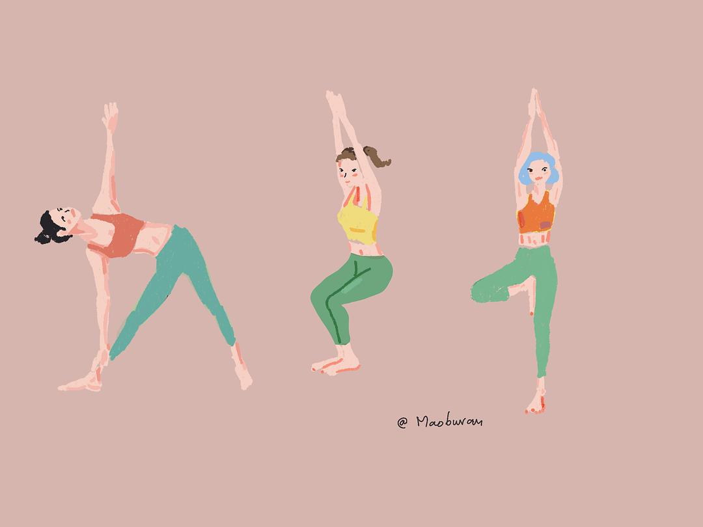
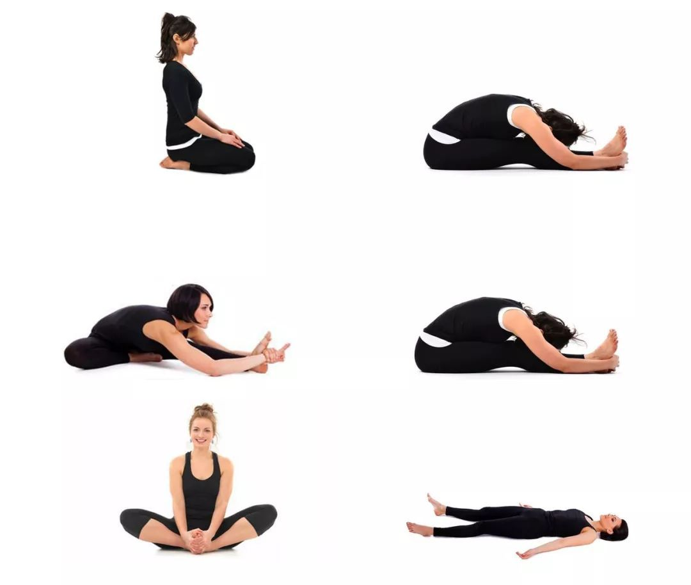
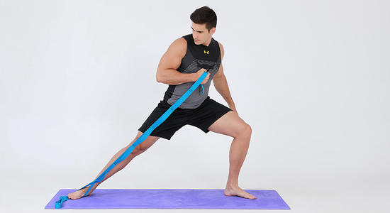

- 
Yoga can enhance the body's strength and elasticity, so that the body's limbs develop in a balanced manner. Yoga can also prevent and treat various physical and mental diseases: back pain, shoulder pain, neck pain, headache, joint pain, insomnia, digestive disorders, dysmenorrhea, hair loss, etc. Yoga can regulate the whole body system, improve blood circulation, promote endocrine balance, decompress and nourish the mind, release the body and mind, and achieve the purpose of self-cultivation and nourishment.
Meditation can not only exercise the body, but more importantly, it can also change a person's inner emotions. At the same time, meditation can help people reduce stress. Regular meditation can regulate the nerves of the brain and relax the brain under stress.
- 
- 
Stretching keeps the muscles flexible, strong, and healthy, It can also reduce sports injuries and fatigue.
Having a good healthy habit can help us avoid letting us fall into a chaotic life state, and can be happy physically and mentally and enjoy the beauty of life.